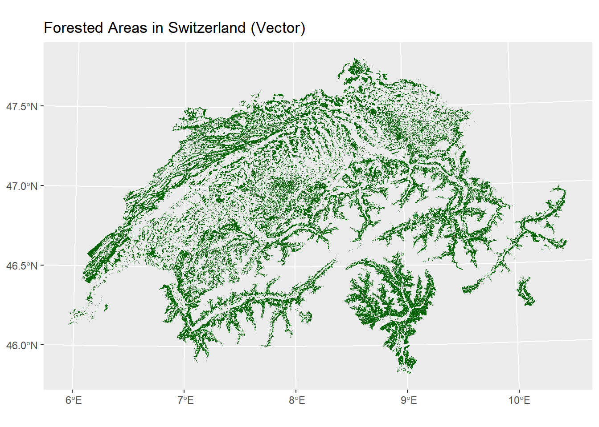
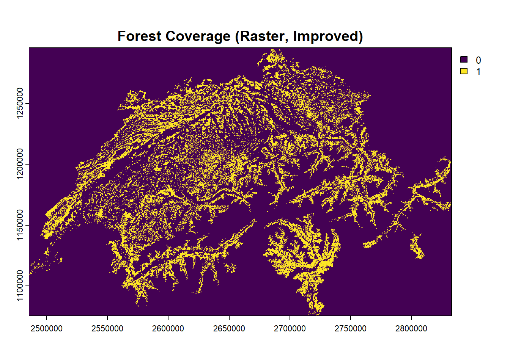
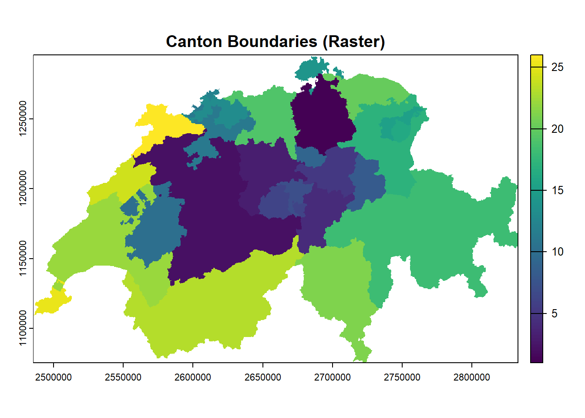
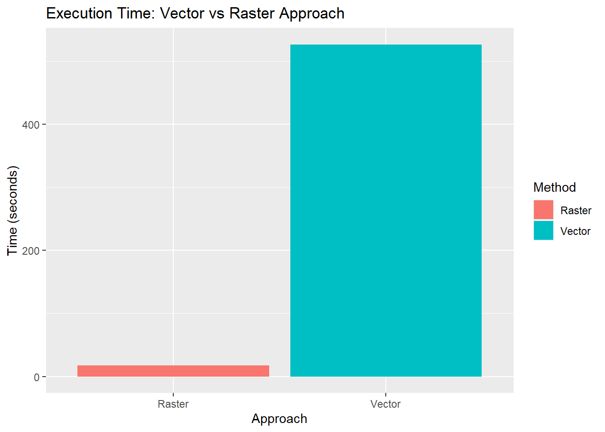

# Load necessary packages
library(sf) # For vector data
library(ggplot2) # For visualization
library(dplyr) # For data manipulation
library(terra) # For raster processing
library(tictoc) # For execution time measurement
library(tibble) # For cleaner outputsSolution for Week 2: Raster Data Processing
Introduction
In this document, I solve the tasks for week 2 of the course
Spatiotemporal Datascience. The goal is to redo last week’s analysis using raster data instead of vector data.
Additionally, I will compare execution times between the two approaches using the tictoc package.
Load Libraries
# Define file paths
tlm3d_path <- "data/SWISSTLM3D_2025.gpkg"
boundaries_path <- "data/swissBOUNDARIES3D_1_5_LV95_LN02.gpkg"
# Load the vector datasets
tic("Load vector data")
tlm3d <- read_sf(tlm3d_path, "tlm_bb_bodenbedeckung")
swiss_boundaries <- read_sf(boundaries_path, "tlm_kantonsgebiet")
toc()Load vector data: 73.5 sec elapsedtic("Filter forest areas (Vector)")
forests <- filter(tlm3d, objektart == "Wald")
forests <- st_set_crs(forests, 2056)
toc()Filter forest areas (Vector): 4.55 sec elapsed# Plot vector-based forests
ggplot() +
geom_sf(data = forests, fill = "darkgreen", color = NA) +
ggtitle("Forested Areas in Switzerland (Vector)")
tic("Calculate forest area per canton (Vector)")
canton_forest_area <- forests %>%
st_intersection(swiss_boundaries) %>%
group_by(name) %>%
summarise(ForestArea = sum(st_area(geom))) %>%
ungroup()
forest_area_vector_time <- toc()Calculate forest area per canton (Vector): 525.58 sec elapsedtic("Calculate total area per canton (Vector)")
canton_total_area <- swiss_boundaries %>%
group_by(name) %>%
summarise(TotalArea = sum(st_area(geom))) %>%
ungroup() %>%
st_drop_geometry()
total_area_vector_time <- toc()Calculate total area per canton (Vector): 0.63 sec elapsedtic("Compute forest coverage percentage (Vector)")
forest_coverage_vector <- left_join(canton_forest_area, canton_total_area, by = "name") %>%
mutate(ForestPercentage = (ForestArea / TotalArea) * 100)
coverage_vector_time <- toc()Compute forest coverage percentage (Vector): 0.54 sec elapsed# Print results
as_tibble(st_drop_geometry(forest_coverage_vector))# A tibble: 26 × 4
name ForestArea TotalArea ForestPercentage
<chr> [m^2] [m^2] [1]
1 Aargau 489875833. 1403798009. 34.9
2 Appenzell Ausserrhoden 76630211. 242836490. 31.6
3 Appenzell Innerrhoden 47223028. 172476020. 27.4
4 Basel-Landschaft 202579073. 517668761. 39.1
5 Basel-Stadt 4652462. 36953764. 12.6
6 Bern 1667235367. 5958505730. 28.0
7 Fribourg 417889316. 1672427799. 25.0
8 Genève 32741213. 282487194. 11.6
9 Glarus 166198271. 685314332. 24.3
10 Graubünden 1614784555. 7105296294. 22.7
# ℹ 16 more rowsresolution <- 25
# Create raster template
tic("Create raster template")
raster_template <- rast(ext(forests), resolution = c(resolution, resolution), crs = st_crs(forests)$wkt)
toc()Create raster template: 0.05 sec elapsed# Rasterize forests
tic("Rasterize forests")
forest_raster <- rasterize(vect(forests), raster_template, field = 1, fun = "sum", background = 0)
|---------|---------|---------|---------|
=========================================
toc()Rasterize forests: 60.83 sec elapsedplot(forest_raster, main = "Forest Coverage (Raster, Improved)")
tic("Rasterize canton boundaries")
canton_raster <- rasterize(vect(swiss_boundaries), forest_raster, field = "kantonsnummer", fun = "max")
rasterize_canton_time <- toc()Rasterize canton boundaries: 4.32 sec elapsedplot(canton_raster, main = "Canton Boundaries (Raster)")
tic("Calculate forest area per canton (raster)")
forest_area_raster <- zonal(forest_raster, canton_raster, fun = "sum", na.rm = TRUE)
forest_area_raster_time <- toc()Calculate forest area per canton (raster): 4.84 sec elapsedtic("Calculate total area per canton (raster)")
dummy_raster <- canton_raster
values(dummy_raster) <- 1
|---------|---------|---------|---------|
=========================================
total_area_raster <- zonal(dummy_raster, canton_raster, fun = "sum", na.rm = TRUE)
total_area_raster_time <- toc()Calculate total area per canton (raster): 8.41 sec elapsedtic("Compute forest coverage percentage (Raster)")
# Convert pixel counts to square meters
forest_area_raster[, 2] <- forest_area_raster[, 2] * (resolution^2)
total_area_raster[, 2] <- total_area_raster[, 2] * (resolution^2)
colnames(forest_area_raster) <- c("kantonsnummer", "ForestArea")
colnames(total_area_raster) <- c("kantonsnummer", "TotalArea")
forest_coverage_raster <- merge(forest_area_raster, total_area_raster, by = "kantonsnummer")
forest_coverage_raster$ForestPercentage <- (forest_coverage_raster$ForestArea / forest_coverage_raster$TotalArea) * 100
coverage_raster_time <- toc()Compute forest coverage percentage (Raster): 0 sec elapsedprint(forest_coverage_raster) kantonsnummer ForestArea TotalArea ForestPercentage
1 1 503343750 1728958750 29.11254
2 2 1667481250 5958496875 27.98493
3 3 406561875 1493517500 27.22177
4 4 154041250 1076518125 14.30921
5 5 270978125 907844375 29.84852
6 6 174079375 490594375 35.48336
7 7 83514375 275862500 30.27391
8 8 166253125 685310625 24.25953
9 9 62382500 238739375 26.12996
10 10 417823125 1672422500 24.98311
11 11 319869375 790455000 40.46649
12 12 4647500 36957500 12.57526
13 13 202555625 517667500 39.12852
14 14 125478125 298430625 42.04599
15 15 76562500 242826875 31.52966
16 16 47255625 172472500 27.39893
17 17 536635000 2028258750 26.45792
18 18 1615081875 7103067500 22.73781
19 19 489928750 1403778750 34.90071
20 20 199535000 994294375 20.06800
21 21 1194708125 2812152500 42.48376
22 22 944718750 3212029375 29.41190
23 23 1048090000 5224634375 20.06054
24 24 274360000 802171250 34.20217
25 25 32824375 282475000 11.62028
26 26 334339375 838511875 39.87294# Sum total execution times for vector and raster approach
vector_total_time <- sum(
forest_area_vector_time$toc - forest_area_vector_time$tic,
total_area_vector_time$toc - total_area_vector_time$tic,
coverage_vector_time$toc - coverage_vector_time$tic
)
raster_total_time <- sum(
rasterize_canton_time$toc - rasterize_canton_time$tic,
forest_area_raster_time$toc - forest_area_raster_time$tic,
total_area_raster_time$toc - total_area_raster_time$tic,
coverage_raster_time$toc - coverage_raster_time$tic
)
# Create execution time comparison plot
execution_times <- data.frame(
Method = c("Vector", "Raster"),
Time = c(vector_total_time, raster_total_time)
)
ggplot(execution_times, aes(x = Method, y = Time, fill = Method)) +
geom_bar(stat = "identity") +
ggtitle("Execution Time: Vector vs Raster Approach") +
ylab("Time (seconds)") +
xlab("Approach")
cat(”
## Discussion and Comparison of the Two Approaches
The results show that the raster approach is much faster than the vector approach. While the vector method took almost 8 minutes, the raster method finished in just a few seconds. The biggest slowdown in the vector method seems to come from spatial intersections (st_intersection), which take a long time when working with complex polygons. In contrast, raster calculations seem to be more efficient since they work on a grid-based system.
This result was sort of expected, since we already discussed in the previous lecture that that ‘raster is faster’, but I was still surprised by how big the difference actually is. The results between the two approaches are quite similar, but there could be some minor differences due to raster resolution and edge effects.
It would be interesting to see how the results change when using different raster resolutions. A smaller grid might increase precision but slow down processing, while a larger grid could make it even faster but might reduce accuracy. This could be something to test in future work.
“)
“)